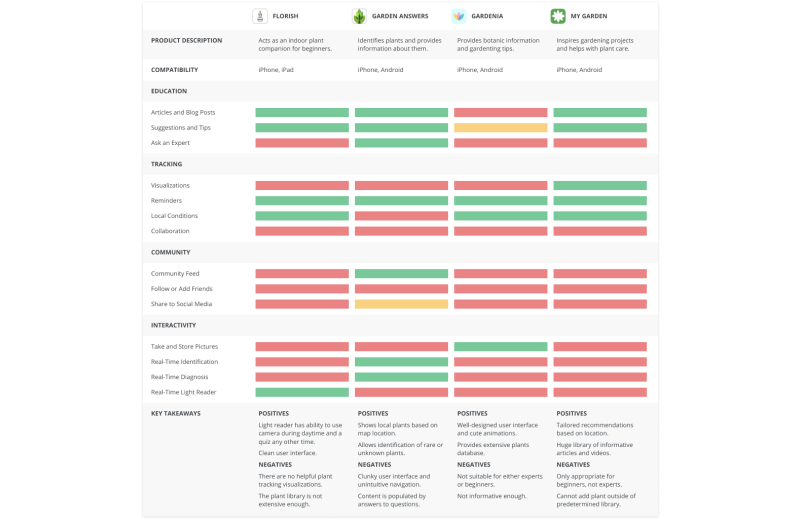
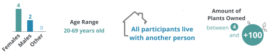
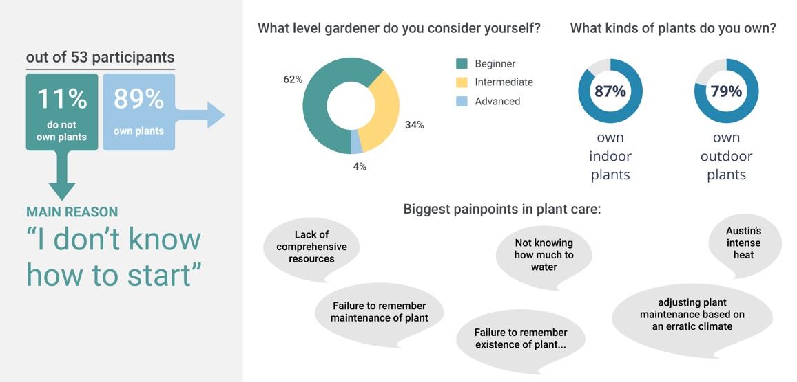
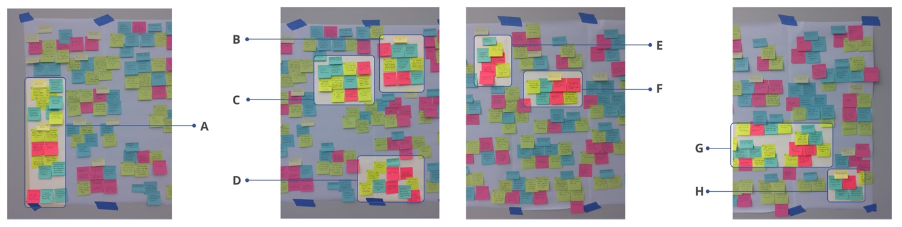
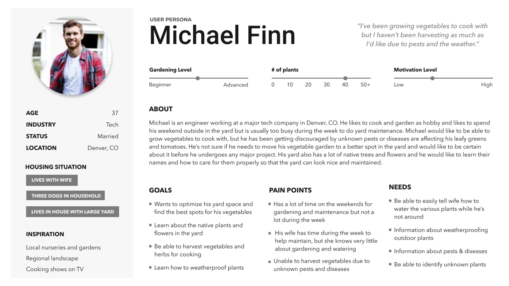
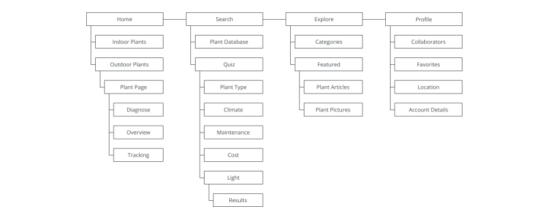

Process and Timeline

Research Stage
Generative Research
Competitive Analysis
We started by conducting a competitive evaluation of four direct competitors and 6 indirect competitors. Our goal was to identify similar products inside and outside the gardening space and compare strengths and weaknesses across them. This helped focus our efforts during the user research and inform our overall design process.

Generative User Interviews
The next step was six in-person generative research interviews to better understand the needs of plant owners. The interviews consisted of 48 questions, divided into four sections: warm-up, general overview, plant type questions, and plant care questions.

Our key findings from these interviews were the following:
- Avg. satisfaction level with resources to help with plant selection: 3.42 out of 5
- Avg. satisfaction level with resources for plant care information: 3.25 out of 5
- Participants pointed out the lack of "comprehensive" resources
- Participants find it hard to coordinate plant care with roommates/partners
Survey
After gathering qualitative data from the interviews, we designed a survey to gather quantitative data. We pulled the most important questions from the user interviews and turned them into 33 survey questions, and received 53 responses. The biggest takeaways about painpoints are illustrated below:

Analysis
Taking insights from the six interviews we conducted, we made an affinity diagram to better organize key themes and painpoints and compare them with data from the survey.

The key themes we found were the following:
- A: While most participants access info about plants online, they are overwhelmed with the amount of info & it’s a lot to sift through.
- B: Co-owning plants presents a unique set of challenges.
- C: Participants buy plants from a variety of vendors. Examples include online nurseries, local nurseries, and stores like Home Depot.
- D: Participants mentioned buying plants based on looks and then figuring out how to care for it through trial and error.
- E: Most participants keep track of a watering schedule in their head, taking factors like rain into consideration.
- F: Participants tend to buy plants that require less maintenance or invent ways to decrease maintenance (e.g. irrigation systems).
- G: Climate and varying seasons are concerns of participants when considering plant purchase and care.
- H: Participants find it difficult to determine the reasons behind deteriorating plant health or what resources to use.
Ideation and Modeling
Personas
We created two personas to cover the breadth of users that our app would serve. The goal was for the app to be simple enough for a novice plant owner, like Jordan, to use, yet be comprehensive enough for continued use as a user moved from beginner gardener to advanced, such as Michael.

Hierarchical Task Inventory
After the personas, we created a hierarchical task inventory (HTI) to determine which tasks were most important to users. Plant choice and plant care were frequently brought up as painpoints during interviews, so we focused the HTI on these, listing sub-tasks below to help us visualize the entire process.

Journey Map
While the HTI was useful, it did not incorporate the emotions of the users so it was difficult to prioritize features. As a solution, we created a user journey map to highlight the biggest painpoints and come up with opportunities to address them in the design stage.
Design and Evaluation Stage
Information Architecture
For the design stage, we used a diverge and converge tactic, each sketching what we had in mind separately and then comparing. While we were all essentially on the same page, we each depicted slight differences in the information architecture of our designs. Therefore, we created an initial model of the site map to guide the prototype design.

Iterative Prototyping
Low-Fidelity Prototype
We began with low-fidelity paper prototypes, so that we felt comfortable scrapping ideas without having spent too much time on the fine details.

Key Findings
We tested the paper prototypes with five users, per Jacob Nielsen's recommendation. The key findings were the following:
Medium-fidelity prototype
Using feedback from the paper prototype testing, we moved to medium fidelity so that we could test the true functionality of the design without the distraction of colors or pictures.
Key Findings
The bulk of the usability testing of the prototypes was on the medium fidelity version. For this round, we conducted in-person usability tests with nine users, going through the same scenarios from round 1 of testing to better evaluate the improvement of the user experience. Key findings are provided below.
High-fidelity prototype
Our project ended with a high fidelity prototype. We developed a color scheme of blues and greens to fit the plant theme, while maintaining a simple and clean look to not distract from the pictures of the plants.
Key Findings
description goes here
Lessons Learned
- Out of 47 survey respondents, only two identified as "Advanced Gardeners." In retrospect, we could have added a question about the possibility of follow-up interviews, since it was tough to recruit advanced users when it came to usability testing.
- We tried to include too many features within a short timeline (a semester). In the end, we focused our attention on our key differentiators, which were the photo diagnosing tool and the "choose a plant" wizard and we focused our design scenarios on these features. This resulted in scrapping the collaboritive features of the app. On the plus side, this presents an opportunity for a continuation of this app concept as a personal project.
- Lastly, we didn't factor in enough time at the end of the semester to create a final prototype or mockup based on the key findings of the third round of testing. Again, this is another opportunity for a personal project continuation.
To view the full report, click here.
To view the final high-fidelity prototype, click here.